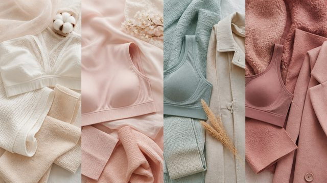
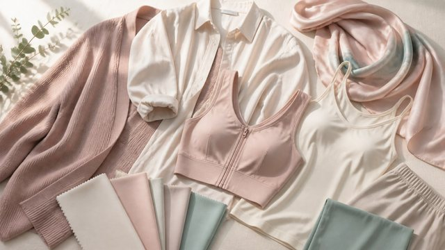

日常美化穿搭
按场合选内衣，挺拔的体态最加分。

本专栏文章

不同胸型怎么选内衣｜选对承托，才是真的合身
胸型本就多样，没有「标准身材」。先了解自己的胸型与支撑需求，才能选到真正合身、舒服的那一件。
阅读全文

不同场合的内衣｜让它各司其职
内衣不是只有一种标准答案。不同场景对支撑、隐形、舒适的需求各不相同，选对了，每天都更轻松。
阅读全文

穿衣技巧与体态｜挺拔，就是最好看的姿态
与其纠结显瘦还是显丰满，不如先学会用领型、面料和版型扬长避短，再把重心放在抬头挺胸的体态上。
阅读全文

内衣尺码与合身判断｜合身，就是穿了像没穿一样
尺码不是越小越显瘦、越大越丰满的标签。它只是帮你找到承托与舒适的第一条线索，真正靠得住的是身体的感觉。
阅读全文

不同季节与面料的穿搭｜让内衣跟着四季换季
内衣也有四季。夏天求轻薄透气，冬天要保暖支撑，选对面料与轮廓，才不算将就，身体也会更舒服。
阅读全文

医美后的穿衣注意事项｜给恢复期的身体多一分体贴
手术或治疗后的一段时间，身体需要被温柔以待。穿衣时放松一些、避开摩擦与勒压，就是给恢复中的自己最好的照顾。
阅读全文
想要更进一步了解？
任何关于胸部美学、健康或手术的疑问，建议你到正规医疗机构，由执业医师面诊评估。健康与安全，永远优先。
回到顶部